통영, 맞춤
추천일정
입니다.
동피랑·미륵도·섬 트립까지, 동선대로 가볍게 즐겨요.
Day 1
Day 2
Day 3
1
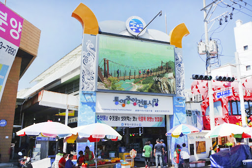
통영 중앙시장
market ·
경상남도 통영시 중앙시장1길 일대
꿀빵·회·건어물 쇼핑으로 든든한 출발.
2
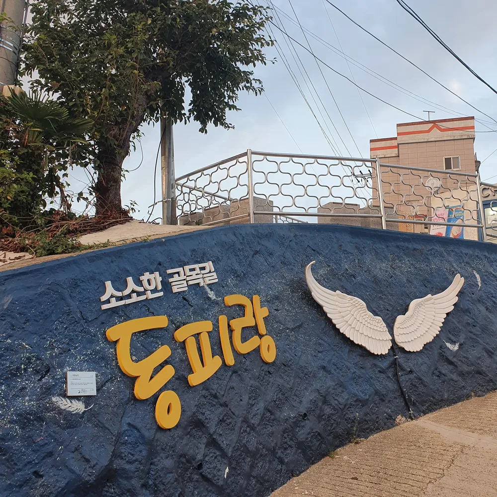
동피랑 벽화마을
mural village ·
경상남도 통영시 동피랑1길 일대
알록달록 골목과 통영항 뷰 포인트.
3
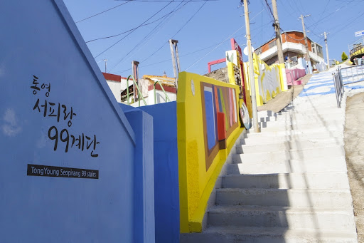
서피랑 계단
walk ·
경상남도 통영시 서호동 일대
99계단 포토스팟 & 카페 스탑.
4
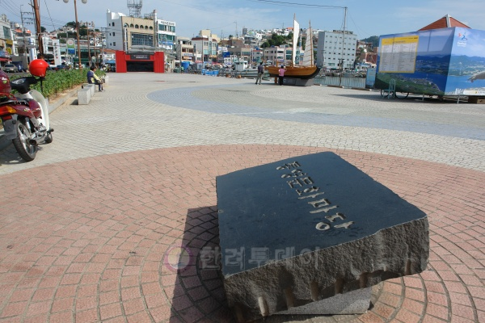
강구안 문화마당
harbor walk ·
경상남도 통영시 항남동 강구안로 일대
바다 산책과 미술관·카페가 모여 있는 해변 라인.
5
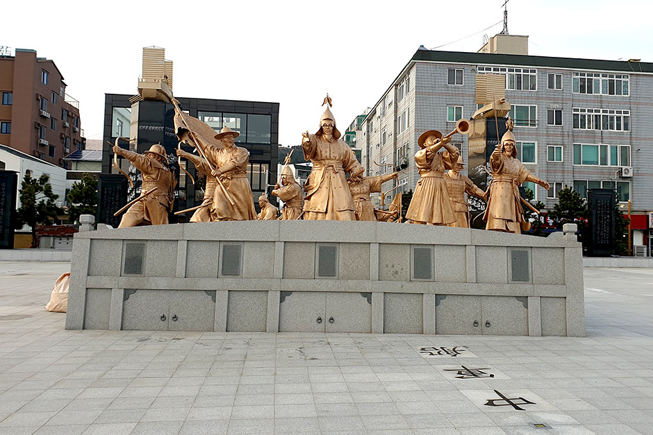
한산대첩공원
night view ·
경남 통영시 항남동 288-3
한산대첩을 기념한 공원으로, 관련한 조형물과 기념물이 전시되어 있는 공간.
1
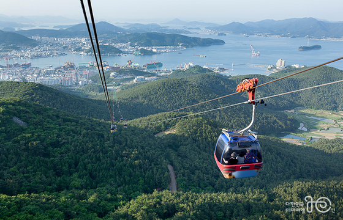
통영 케이블카(미륵산)
cable car ·
경상남도 통영시 발개로 205
한려수도 파노라마. 이른 시간대 추천.
2
스카이라인 루지 통영
activity ·
경상남도 통영시 발개로 178
남녀노소 신나는 다운힐 트랙 체험.
3
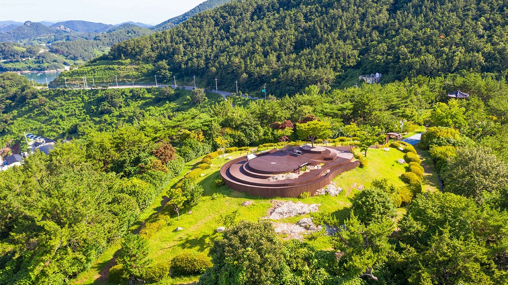
달아공원
sunset ·
경상남도 통영시 산양읍 미남로 948
통영 최고의 일몰 스팟 중 하나.
4
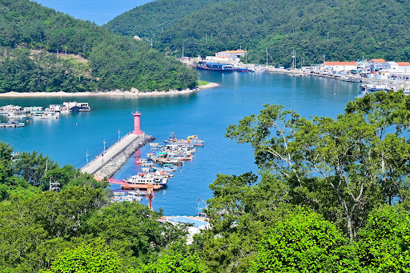
당포항
cafe ·
경남 통영시 산양읍 삼덕리 372-11
당포항에서 즐기는 바닷가의 여유로움과 상쾌함.
5
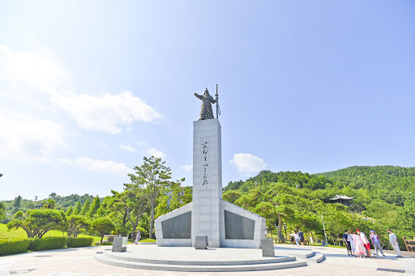
이순신공원
park ·
경상남도 통영시 정량동 118
한산대첩의 도시를 상징하는 해변 공원.
1
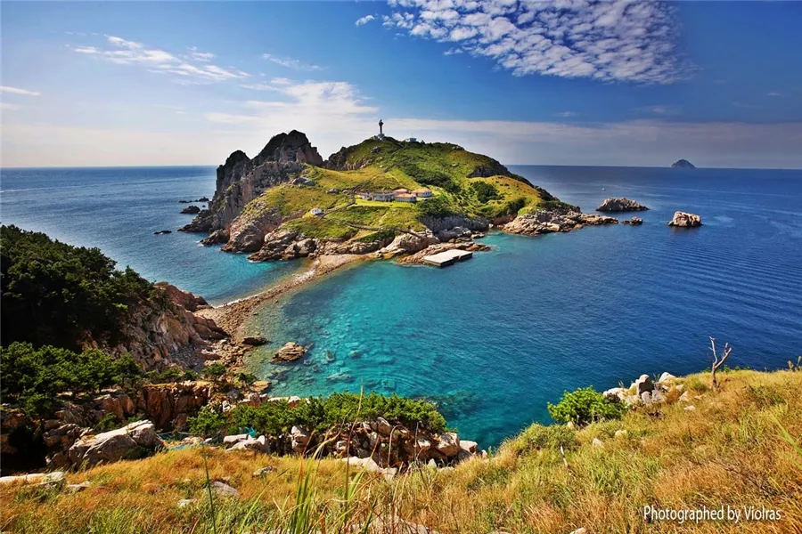
소매물도(등대섬)
island ·
경상남도 통영시 한산면 소매물도
배편 시간 체크 필수! 트레킹 후 에메랄드 바다.
2
욕지도 드라이브
island ·
경상남도 통영시 욕지면 일대
해안도로 따라 펼쳐지는 남해 절경.
3
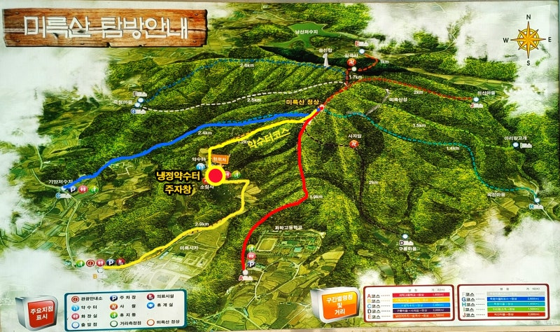
미륵산 등산로
trail ·
경상남도 통영시 도남동 미륵산 일대
완만한 능선길로 한려수도 조망.
4
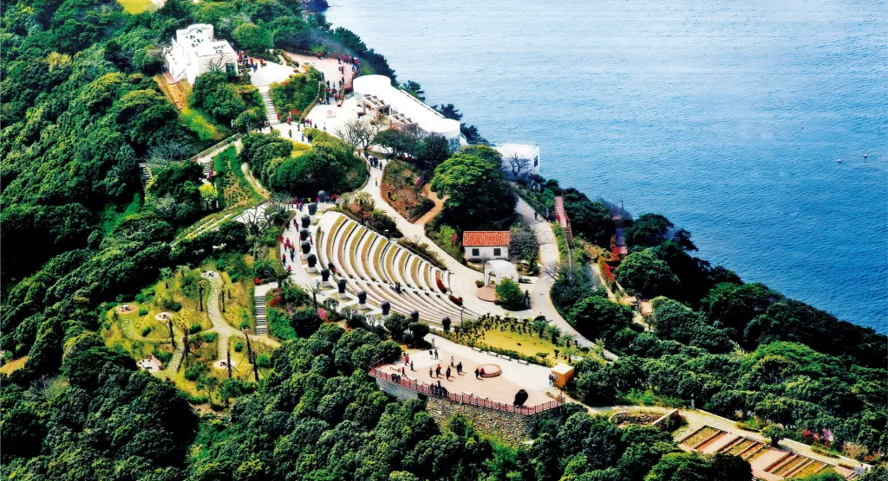
통영해상공원
park ·
경상남도 통영시 항남동 통영해상공원
바다와 예술이 어우러진 휴식 공간.
5
통영운하·충무교 야경
night view ·
경상남도 통영시 강구안로 일대
야간 조명과 바다바람으로 여행 마무리.
내 일정으로 담기